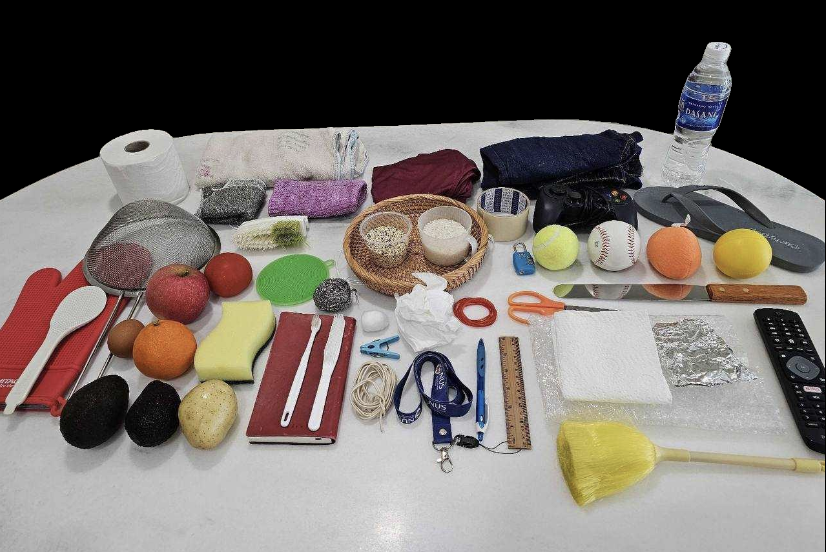
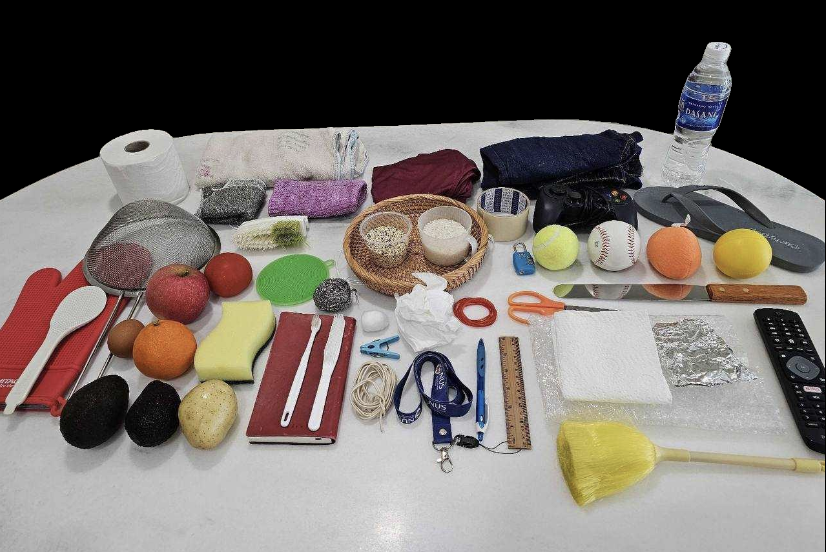
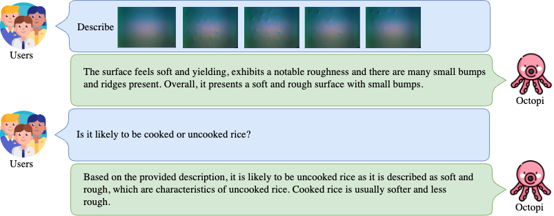
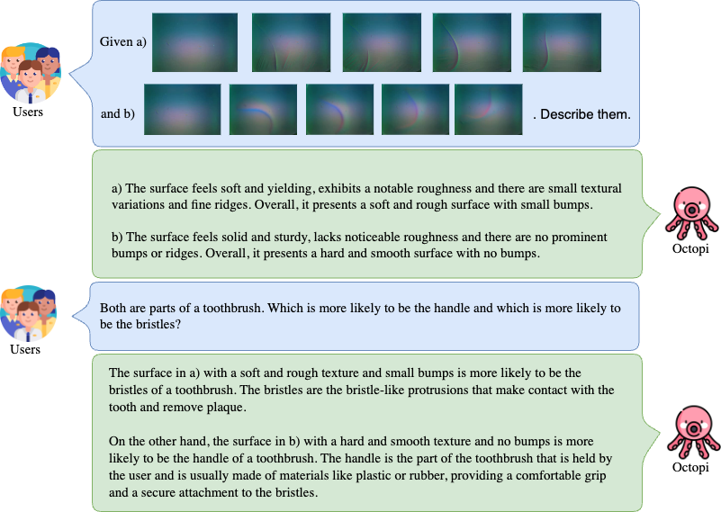

Physical reasoning is essential for safe and efficient AI systems in robotic manipulation. To ensure that the system’s physical understanding of the object properties is grounded in its existing physical reality, computer vision is insufficient. In this work, we first define a set of physical properties that are both useful and decipherable from our choice of tactile sensor, GelSight, and introduce PhysiCLeAR, a tactile video dataset annotated using the physical properties. We then introduce Octopi, an end-to-end system that leverages both tactile representation learning and large vision-language models to predict and reason about vision-based tactile inputs with minimal language fine-tuning. We construct an evaluation suite spanning five problems to evaluate our system's learned tactile representations and physical reasoning holistically. Our experiments show that Octopi is able to effectively use intermediate physical property prediction to improve physical reasoning robustness and improve performance on robotic tasks when there is visual ambiguity.
To facilitate the grounding of our physical reasoning on tactile inputs, we collected a tactile dataset of 74 everyday objects, totalling 408 tactile videos. These objects were selected to span across our three selected properties, with variations across object types and materials.
 



The Octopi framework comprises three trained components: 1) tactile input encoder, 2) projection module, and 3) LLM, following prior LVLM work that take videos as inputs. Firstly, prior LVLM work leverage the strengths of powerful pre-trained vision models, specifically CLIP's visual encoder, to extract useful feature representations. We follow prior work and use the pre-trained CLIP visual encoder ViT-L/14 as the base model of our tactile encoder. A projection module is present in existing work to project the encoder's output representations into embeddings with the same dimensionality as the LLM's word embeddings. This projection module is generally simple and comprises one or two trainable layers. For our projection module, we follow LLaVA's projection module and use two linear layers along with an intermediate GELU activation. Finally, the LLM forms the language understanding component of Octopi. LLM performance depends heavily on the datasets that they are pre-trained on. We use the open-source LLaMA-based LLM, Vicuna due to its dialogue capabilities.
We showcase two different dialogue scenarios that Octopi is capable of. First being food state reasoning, and second being objet part reasoning.
  Octopi
Octopi